Olivia Johnston, digital media production. Creating, editing, producing.
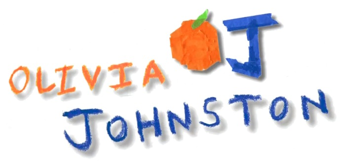
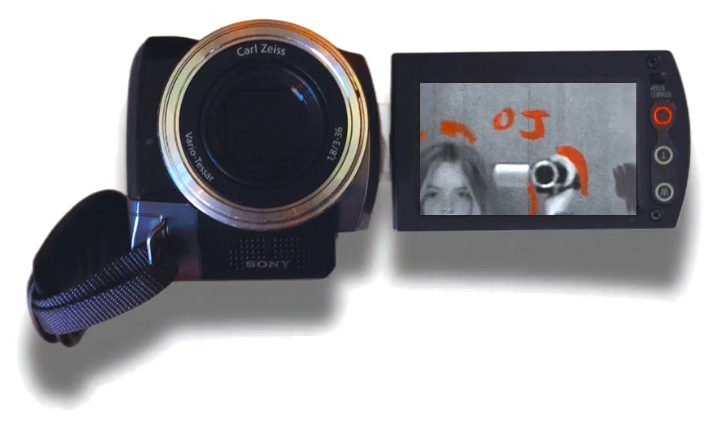
HI IM OJ
I am a communications student
concentrating in digital media
production, based in Atlanta. I
love to create and put my own
touch on things.
Having a creative outlet, whether
in music, film, sewing,
photography, or drawing, is
violently important to me.
I am especially interested in
videography, social media design,
editing, storytelling, and
interviews.
Being behind the camera,
expressing my thoughts out loud
or just creating something funky,
I want to create media pleasing to
the human experience and
something someone out there can
escape into or register with.
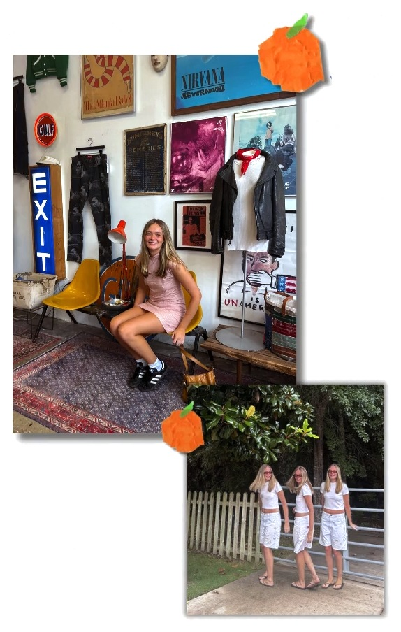
WORK
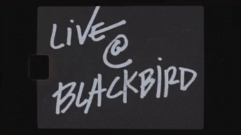
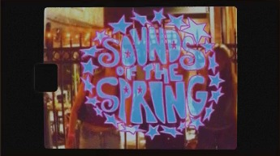
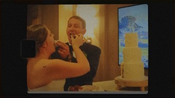
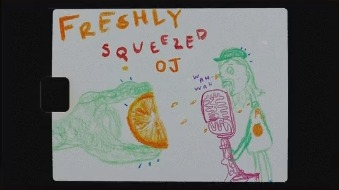
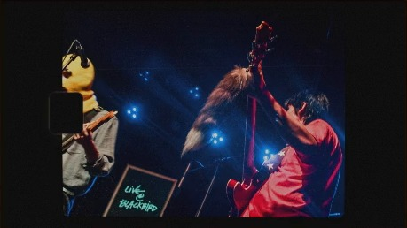
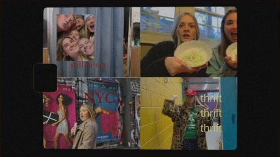
SKILLS
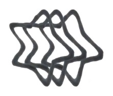
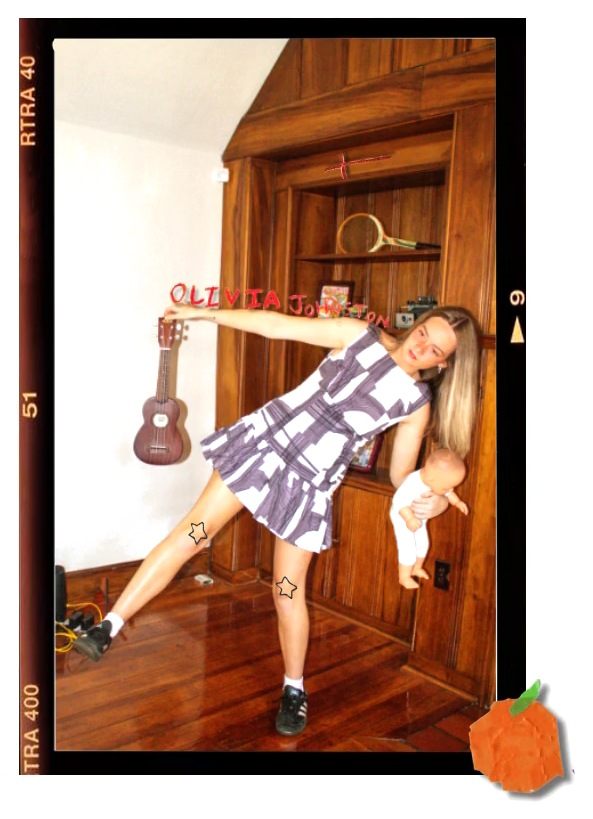
CONTACT ME
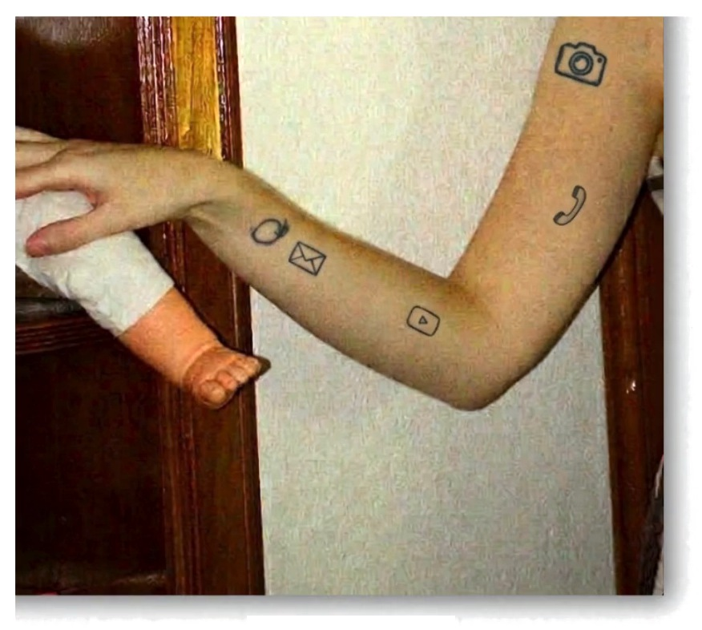
VIDEOGRAPHY
LIVE @ BLACKBIRD
Live @ Blackbird is an intimate live filming session in a coffee shop. I shoot it on a Blackmagic Pocket Cinema Camera, then color grade and edit in DaVinci Resolve.
Here is a full video of the band Tattoo Logic.
SOCIAL MEDIA REELS
SOUNDS OF THE SPRING
Sounds of the Spring is a local music festival. I shot with a Lumix GH7 and edited this reel with Adobe Premiere Pro.
WEDDING VIDEO
MCKAY & CODY
I am self-employed, and this is a short segment of McKay and Cody's wedding video.
PODCASTING
FRESHLY SQUEEZED
I am the editor and host of Freshly Squeezed. I record and mix in Adobe Audition, and it is where I show my love for storytelling, interviewing and conversation.
EPISODE
A SQUEEZE
YOUTUBE
MY YOUTUBE
My YouTube is one of my creative outlets. It is where I do random fun things and show my life, my love for travel and fashion.